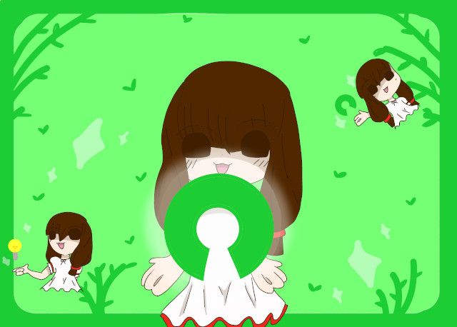

Si ya usas código abierto, te contamos como puedes sacarle mayor provecho a tu documentación (para tus artículos y publicaciones)

Con mucha frecuencia, los proyectos de codigo abierto suelen prestar poca atención al tema de documentación. De hecho, es tan común que la encuesta Open Source Survey1 (realizada por Github, involucrando tanto académicos, como a trabajadores en la industria de computación, como colaboradores independientes) reportó que al menos 93% de los encuestados, creían que la documentación incompleta o sin actualizar era uno de los problemas mas agravantes dentro de la esfera del software libre. En la misma encuesta, 60% de los participantes admitían también contribuir a la documentación de sus proyectos con muy poca frecuencia.
Independientemente del tipo de proyecto en el que participes o de su objetivo, la documentación es un factor muy importante a la hora de crear proyectos accesibles y inclusivos, en el sentido de que facilita muchísimo tanto su uso como la colaboración entre personas que no estén activamente involucradas en su desarrollo. Establecer de forma clara términos de uso del código, manuales o guías permite a tus usuarios ser autosuficientes y dar sugerencias mucho más útiles y profundas, además de que puede ser el factor clave entre que alguien se vuelva un colaborador o que termine ignorando tu proyecto. Tal como dice WriteTheDocs2:
- Si la gente no sabe que tu proyecto existe, no lo usarán.
- Si la gente no sabe como instalar tu codigo, no lo usarán.
- Si la gente no puede entender como usar tu codigo, no lo usarán.
Fuera de cuestiones de colaboración o facilidad de lectura, es obvio también que el código se hace progresivamente más dificíl de entender y recordar conforme el proyecto avanza y se hace más extenso, por lo que la documentación se vuelve una herramienta de supervivencia, especialmente si no pretendes trabajar en el código con frecuencia. Algo que puede ocurrirte con más frecuencia que la que esperas, es estar en la situación donde quieres continuar un proyecto de hace meses pero no entiendes absolutamente nada de lo que hace el código.
Por estas razones (¡y muchas otras!) la documentación de tu trabajo es imperativa. Sin embargo, normalmente durante el proceso de documentación, utilizamos destrezas que no suelen aprenderse en trabajos relacionados con software, por lo que los lineamientos que se deben seguir para llevar a cabo una buena documentación pueden no estar muy claros. Entonces, ¿qué es lo que hace una buena documentación de codigo abierto?
Accesibilidad
A la hora de escribir tu documentación, tienes que tener en cuenta que la van a leer tanto usuarios como desarrolladores, y que por lo general van a querer acceder a la información de la forma mas rápida y completa posible. El uso de hipervínculos y tablas de contenidos ayuda bastante, permitiéndote reutilizar otras documentaciones abiertas, a la vez que puedes mantener la información ordenada y concisa, ayudando a los usuarios encontrar los términos o datos que necesitan de la forma más rápida y sencilla posible. Por esta razón también es recomendado poner ciertos datos que van a buscar la mayoría de los interesados en un primer momento, tales como: la licencia que utilices, la meta del proyecto, ejemplos de uso, lista de tareas por realzar, etc.
Comunicación con tus usuarios
Puede sonar obvio, pero la documentación al final del dia, está pensada para que la lean tus usuarios. Si está dentro de la posibilidad, es bastante beneficioso agregar canales por los cuales puedan consultar y hasta contribuir otros desarrolladores: pull requests, tus cuentas en redes sociales, acceso al rastreamiento de problemas, FAQs, entre otros. Para este fín puedes usar ciertas convenciones como el archivo CONTRIBUTING.md, el cual especifica normas de conducta, como se prefiere que se comuniquen los usuarios, y las responsibilidades de los administradores del repositorio.
También podemos añadir que contribuir a la documentación de cualquier repositorio es una forma facil y relativamente sencilla de apoyar un proyecto sín involucrarse demasiado. Este es uno de los ámbitos donde cualquiera puede aportar perspectivas relevantes, sín importar demasiado su trasfondo o habilidades particulares.
Guías concisas y ejemplos sencillos
Sín importar el tipo de programa que estés desarollando, facilitará muchisimo su uso si das algunos ejemplos de cómo se utiliza en un contexto cotidiano con una guía paso a paso o una pequeña sección en su manual especificamente para principiantes, con algunos comandos y funciones relevantes para el uso mas basico de tu código. Te puede resultar útil el uso de capturas de pantallas, incluir configuración de texto inteligente (con bloques de codigo, resaltamiento de sintaxis, etcetera), acompañados de parrafos de texto concisos, escritos con lenguaje simple y sin entrar mucho en terminología especifica.
Siempre recomendamos que si necesitas ayuda en cuanto a como escribir documentación, ¡sólo hace falta revisar lo que ya han escrito otros! Ya sea para aprender ciertos modos de escritura que son comunes dentro de esta practica, para aprender de los errores que cometen los demás, o simplemente para situarte en el lugar de alguien que este revisando tu código por primera vez. Leer lo que han escrito los demas con el enfoque de aprender es una buena estrategia. Prácticamente todas las distribuciones de Linux incluyen el comando man que te permite ver información sobre varios comandos de bash, y muchos repositorios de Github tienen por lo menos un archivo README.md, visto en cuanto entras a su pagina, cuyo objetivo es mostrar el principal propósito y uso del proyecto. Es solo cuestión de revisar un poco para encontrar una enorme variedad de ejemplos.
Comentarios
Comments powered by Disqus